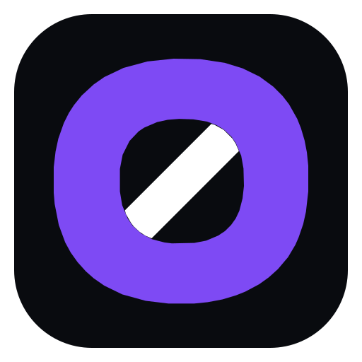

Чаты и каналы
Личные диалоги, группы, каналы, комментарии, ответы, реакции, закрепы и медиа.

Личные чаты, группы, каналы, файлы и звонки. Один интерфейс на компьютере, телефоне и в браузере.
M0D закрывает обычные сценарии мессенджера без десятка отдельных приложений.
Личные диалоги, группы, каналы, комментарии, ответы, реакции, закрепы и медиа.
Голос, видео, демонстрация экрана на ПК и выбор микрофона, наушников или колонок прямо во время звонка.
Windows, Android, Web и временный PWA-вариант для iPhone работают с одним аккаунтом.
Windows и Android устанавливаются как приложения. На iPhone пока используй веб-версию как PWA — она добавляется на главный экран через Safari.
Отдельное приложение для Windows 10/11. Звонки, демонстрация экрана, выбор аудиоустройств и автообновление внутри M0D.
Скачать для WindowsM0D для Android с уведомлениями, звонками и мобильным интерфейсом.
Скачать APKОтдельной сборки App Store пока нет. M0D можно установить на главный экран как веб-приложение.